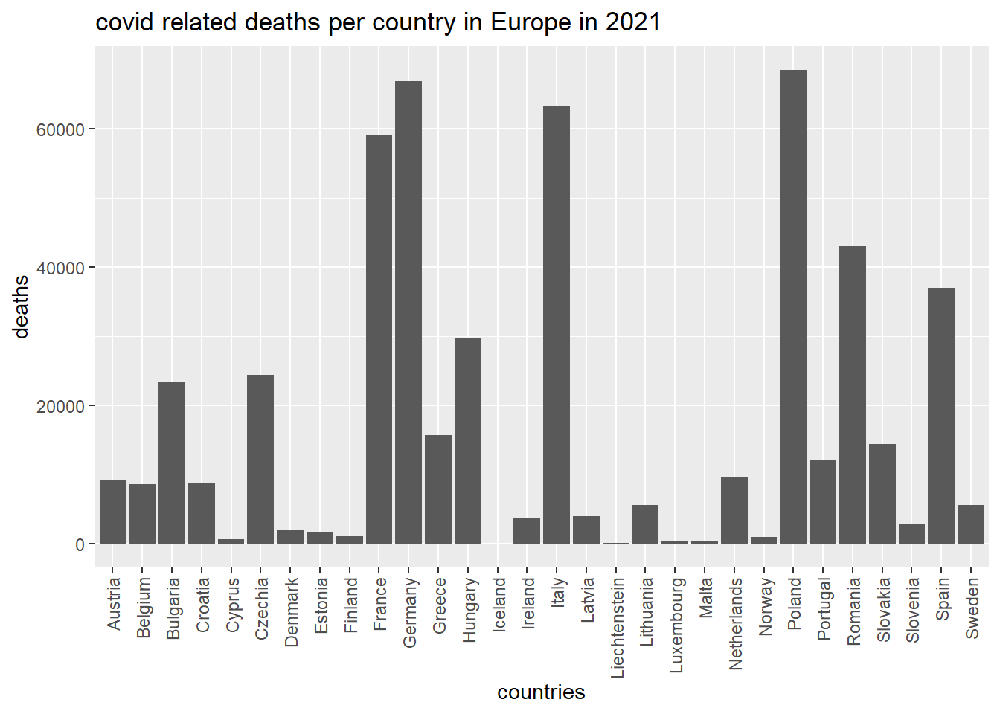

10 Working with parameters
One of the things that I have learned is to work with parameters in markdown files. With the help of parameters its easy to change what you are analysing. The goal of parameters is to make it readable for people but also readable for the program.
For the purpose of showing my skills with markdown parameters I made an analysis based on covid-19 data. With this markdown file it is possible to change parameters. The parameters that are possible to change are:
Country from which you want to see the data
year in which you want to look
firstmonth and lastmonth, so you can look at data between specific months
continent from which you want to look at
In the video beneath you can look at the easy way to change parameters

Working with parameters
library(readr)
library(here)
library(tidyverse)# loading the data to an object
covid_data <- read_csv(here("data", "covid_data.csv"))# change the date collumn to a date class
covid_data$dateRep <- as.Date(covid_data$dateRep, tryFormats = c("%d/%m/%y"))
# filter by country, year an month
country_filter <- covid_data %>% filter(countriesAndTerritories == params$country & year == params$year & month %in% (params$firstmonth:params$lastmonth))
# make a line graph based on the filter output
country_filter %>%
ggplot(aes(x = dateRep, y = cases)) +
geom_line() +
labs(
title = paste("Covid cases from",params$country, "in", params$year),
x = "Date"
)
# filter by year and continent and sum the amount of deaths per country
country_deaths <- covid_data %>% group_by(countriesAndTerritories) %>% filter(year == params$year, continentExp == params$continent) %>% summarize(deaths = sum(deaths, na.rm = TRUE))
# make a bar graph based on the filter output
country_deaths %>%
ggplot(aes(x = countriesAndTerritories, y = deaths)) +
geom_bar(stat = "identity") +
theme(axis.text.x = element_text(angle = 90, vjust = 0.5, hjust=1))+
labs(
title = paste("covid related deaths per country in", params$continent, "in", params$year),
x = "countries"
)